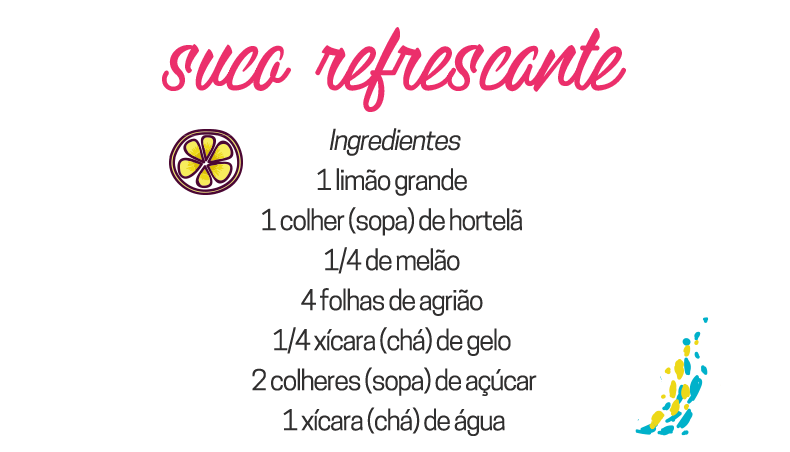

Durante o verão, as pessoas sempre preferem optar por bebidas refrescantes e geladas, como sucos, água de coco e chás. Isso mesmo! Drinks gelados são os que mais agradam o paladar das pessoas. Os sabores são diversos e, além de hidratar, podem proporcionar uma série de benefícios para o organismo.
Acompanha agora uma receita refrescante de suco:
